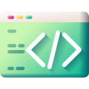

Kinematic Race
This Docs Explains How to make a race game in kinematic body
Rotation and Moving scripting
First of all you gotta need to add a mesh and camera and collision shape
After that Attach a script to the kinematic parent of the player
and type these

extends KinematicBody
# Speed variables
export var speed = 10 #-- Explains it self!, Game will start with that but will increase or be more!
export var rotation_speed = 1.0 #-- Rotation mesh speed!
export var speed_increase = 0.1 #-- How many will the speed increase will be when you don't hold forward
export var max_speed = 200 #-- Speed is limited to prevent any issues!
export var gravity = -9.8 # the gravity constant
export var disable_rotation = false
# Use _physics_process for movement, as we're dealing with a KinematicBody!
func _physics_process(delta):
var velocity = Vector3()
# Forward and backward movement
if Input.is_action_pressed('ui_up'):
velocity += -transform.basis.z
speed = min(speed + speed_increase, max_speed)
if Input.is_action_pressed('ui_down'):
velocity += transform.basis.z
speed = max(speed - speed_increase, 10)
if not Input.is_action_pressed('ui_up'):
speed = max(speed - speed_increase, 10)
# Rotation
if disable_rotation == false:
if Input.is_action_pressed('ui_left'):
rotate_y(rotation_speed * delta)
if Input.is_action_pressed('ui_right'):
rotate_y(-rotation_speed * delta)
# apply gravity to the velocity
velocity.y += gravity * delta
# Make sure the model moves at the same speed in all directions
velocity = velocity.normalized() * speed
# Move the model
move_and_slide(velocity) # warning-ignore:return_value_discarded
And now the player can move and rotate , however the camera doesn't
chase the player and no drift
Add a pivot for the camera and name it camera holder and add a spring arm and add camera to it
Now add these to the script vars
# Camera variables
onready var _camera = $CameraHolder #--Locate the camera
onready var cameraholder = $CameraHolder/SpringArm/Camera
onready var target = $gwa/gwgw #-- Locate the mesh(replace with your own mesh)
export var camera_distance = 5.0 #-- Distance for camera
export var camera_height = 2.0 #-- Height settings for camera
export var zoom_factor = 1.0 #-- Factor for zooming in and out
export var min_zoom = 5.0 #-- Minimum zoom distance
export var max_zoom = 15.0 #-- Maximum zoom distance
export var cameramode = 1 # -- !:TPS 2:FPS 3:CuzTPS
export var mouse_sensitivity = 0.01
export var disable_rotation = false
var adjusted_height: float = 2.0 # Initial height (adjust as needed)
var adjusted_distance: float = 5.0 # Initial distance (adjust as needed)
var smooth_follow_speed: float = 5.0 # Adjust this for smoother camera movement
# Drift variables
export var drift = false #-- Enable or disable drift
export var drift_factor = 0.9
Now add these to the physics process
# Drift
if drift:
velocity = velocity.linear_interpolate(Vector3(), drift_factor)
if cameramode == 1:
var target_pos = target.global_transform.origin
var camera_pos = target_pos + transform.basis.z * camera_distance # Change - to + here
camera_pos.y += camera_height
_camera.global_transform.origin = camera_pos
_camera.look_at(target_pos, Vector3.UP)
# Zoom in and out based on the input value
camera_distance -= Input.get_action_strength("zoom_in") * zoom_factor
camera_distance += Input.get_action_strength("zoom_out") * zoom_factor
# Clamp the camera distance to the min and max values
camera_distance = clamp(camera_distance, min_zoom, max_zoom)
camera_height = clamp(camera_height, 1.0, 10.0) # Adjust min and max values as needed
if Input.is_action_pressed("adjust_camera_height"):
camera_height += Input.get_action_strength("adjust_camera_height") * delta
if Input.is_action_pressed("adjust_camera_height1"):
camera_height -= Input.get_action_strength("adjust_camera_height1") * delta
if Input.is_action_pressed("adjust_dis"):
camera_distance += Input.get_action_strength("adjust_dis") * delta
if Input.is_action_pressed("adjust_dis1"):
camera_distance -= Input.get_action_strength("adjust_dis1") * delta
Now everything is done
But we still need to setup the inputmap
Go to Project Settings > Input Map
And add adjust_dis and this one will be for
adjusting the dis var
then add adjust_dis1 and this one will be for
decreasing the dis
then add adjust_camera_height and this one will be for
adjusting camera height
then add adjust_camera_height and this one will be for
decreasing the camera height
then add zoom_in and zoom_out and they will be for zooming
Now you are done!